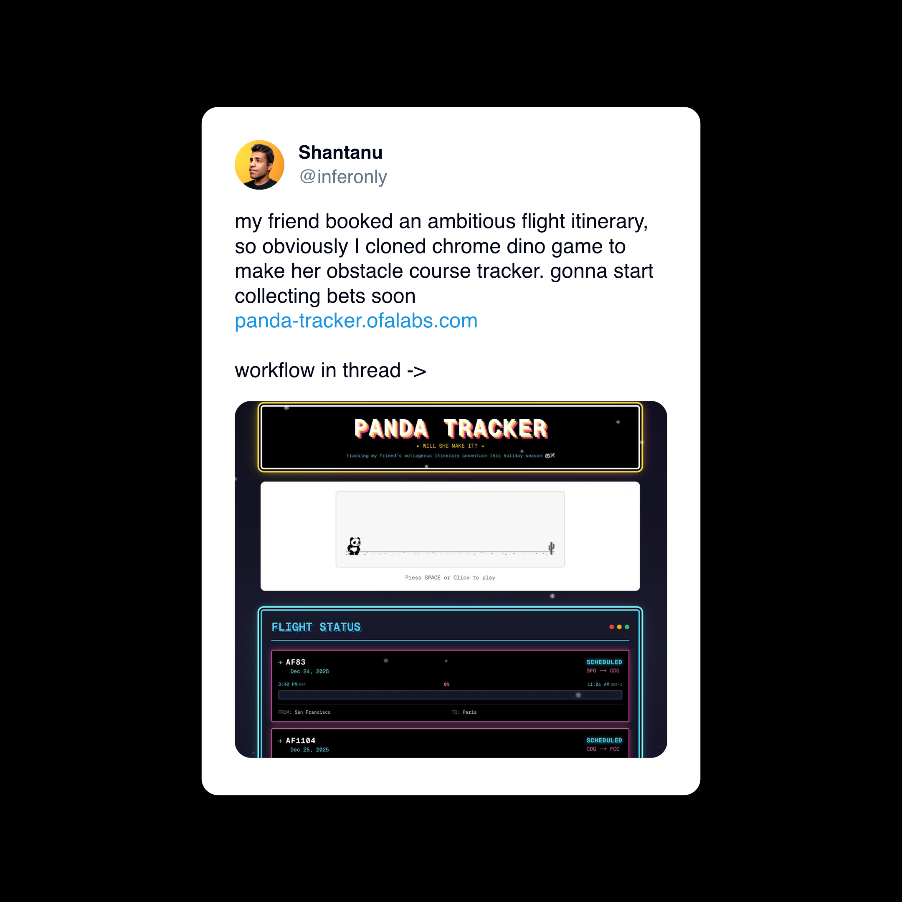
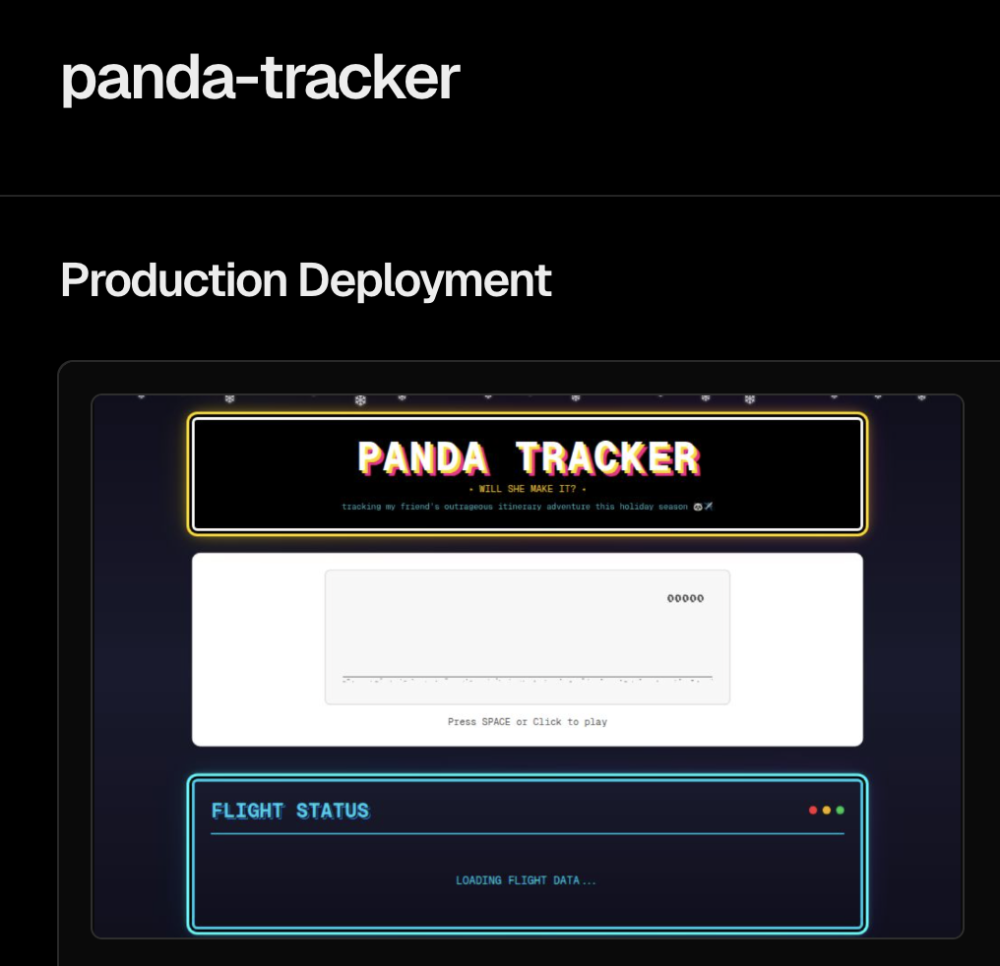

Panda Tracker: A Vibecoding Case Study
The Idea
Track a friend’s holiday flights in real-time with a fun twist: a panda-themed Chrome Dino game to kill time while waiting.

Phase 1: No-Code Exploration
Tools Tried
- Replit, v0, lovable — first attempt
- Lovable — fastest visually appealing result
What Worked
- Got a working flight tracker UI pretty quickly
- Basic layout and styling came together fast
Where It Broke
- Chrome Dino game is complex — hundreds of lines of game logic, not something an LLM writes correctly from scratch
- Flight APIs not supported — Replit, Lovable, and similar platforms weren’t able to figure out FlightAware or similar APIs
- Base64 Images - LLM got stuck trying to copy GIANT chunks of base64 images, when it could have just pointed to the the files.
Lesson: No-code tools are great for prototyping standard UI patterns. They struggle with complex game logic and API integrations that require env vars.
Phase 2: Port to Cursor
Integrating the Dino Game
The Chrome Dino game source is ~2500 lines. Expecting any LLM to write this from scratch is unrealistic.
Approach: 1. Found the extracted Dino game source code online 2. Asked Cursor to integrate it by copying the code 3. Problem: Cursor stalled — too much to copy at once 4. Fix: Manually added the file, then asked Cursor to wire it up
The game is embedded as an iframe:
// components/dino-game.tsx
<iframe
src="/dino-game.html"
className="absolute inset-0 w-full h-full border-0"
title="Dino Game"
/>Lesson: When copying large existing codebases, be smarter and use LLMs to integrate, not to transcribe.
Phase 3: Flight API Integration
The Magic: API Docs as Context
FlightAware’s AeroAPI was the choice. Here’s what made it work:
- Linked Cursor to the API docs — FlightAware has clean documentation
- Cursor read the docs and implemented the integration in minutes
- Got the API key, added to
.env.local
Key implementation details: - Rate limiting with exponential backoff - Date filtering in origin timezone
- Status mapping (scheduled → delayed → en_route → arrived) - Caching to keep (free) api calls to a minimum
Lesson: LLMs excel at API integrations when given good documentation. Point them to the docs, not just the problem.
Phase 4: Custom Sprites (The Fun Part)
Wanted to replace the T-Rex with a panda. This got interesting.
Attempt 1: Cursor-generated SVG
- Asked Cursor to generate sprite SVGs
- Result: Wrong proportions, didn’t match game requirements
Attempt 2: AI Image Generation
- Asked Cursor to analyze the game code and give a sprite spec
- Took that spec to Google’s Nano Banana Pro
- Requested a panda sprite sheet matching the spec
- Got a perfect sprite sheet!
Attempt 3: Processing the Sprite Sheet
- Cursor can’t “see” images accurately for cropping
- Asked Cursor to create a processing script and output cropping positions as variables instead
- Manually calculated the actual pixel positions
- Updated crop positions:
# The sprite positions I had to manually calculate
sprites_approx = [
(45, 260, 215, 480), # Frame 0: Standing (for jumping)
(265, 260, 420, 480), # Frame 1: Idle (for waiting/blinking)
(490, 260, 670, 480), # Frame 2: Running 1
(700, 260, 876, 480), # Frame 3: Running 2
(935, 260, 1085, 480), # Frame 4: Running 3
(1110, 260, 1360, 480), # Frame 5: Crashed
]Lesson: For image work, use LLMs to generate specs and code scaffolding, but expect to manually tune coordinates. You can minimize the manual steps by scripting as much as possible.
Phase 5: Deploy
Easy stuff now. ### Vercel Setup 1. Connect GitHub repo 2. Critical: Don’t commit .env.local 3. Add environment variables in Vercel dashboard: - FLIGHTAWARE_API_KEY 4. Deploy 🚀

Links
- Live Site: panda-tracker.ofalabs.com
- GitHub: https://github.com/ashantanu/panda-tracker
Key Takeaways
| Phase | Tool | What Worked | What Didn’t |
|---|---|---|---|
| Prototype | Lovable/Replit | UI scaffolding | Complex logic, APIs |
| Dev | Cursor | API integration, wiring | Large file copying |
| Sprites | Nano Banana | Image generation | - |
| Sprites | Cursor + Manual | Spec generation | Pixel-perfect cropping |
| Deploy | Vercel | Seamless | - |
The Vibecoding Workflow:
- Start with no-code for fast iteration
- Port to Cursor when you hit limitations
- Point LLMs at documentation, not just problems
- Know when to step in manually
- Keep API keys out of git, set them in deploy settings